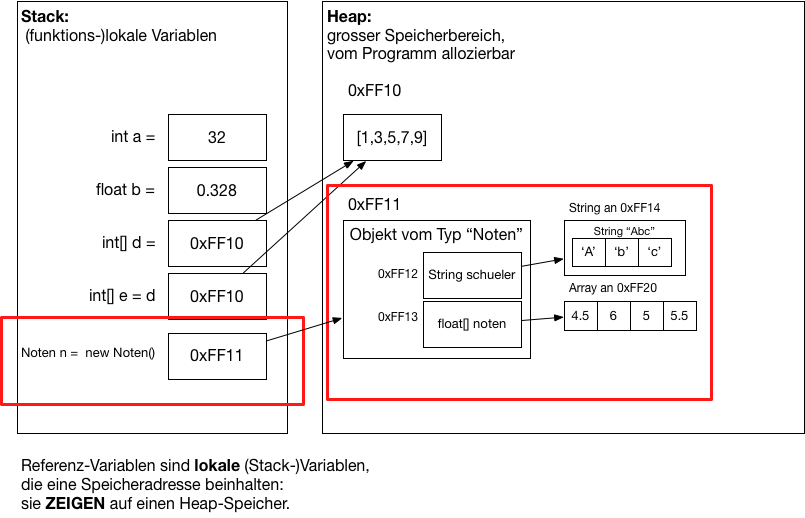
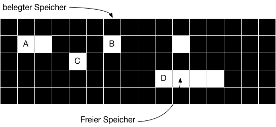

{% extends "../_base_template.html" %}
{% block title %}Lektion 3 - Linked Lists{% endblock %}

{% block sections %}
<section data-markdown >
<textarea data-template>
<i class="fas fa-graduation-cap"></i> Lektion 3 - Grundlagen Linked Lists
=============================

Ziel der Lektion:

* Sie können Klassen als komplexe Datenstrukturen in Java nutzen
* Sie wissen, was Referenzvariablen sind und wie diese mit Objekten im Speicher zusammenhängen
* Sie verstehen den Aufbau einer Linked List
* Sie können eine Linked List in Java als Container-Klasse selber programmieren

</textarea>
</section>

<section>
<section data-markdown >
<textarea data-template>
<i class="fas fa-graduation-cap"></i> komplexe Datentypen - zur Erinnerung
=============================

Wir repetieren kurz:

* Komplexe Datentypen in Java bilden wir mit Klassen ab.
* Klassen sind "Baupläne" für spätere Objekt-Instanzen
* Klassen bestehen aus **Attributen** und **Methoden**

<i class="far fa-hand-point-right"></i> Mehr dazu im Modul von Herrn Inauen.

</textarea>
</section>

<section data-markdown >
<textarea data-template>
<i class="fas fa-graduation-cap"></i> komplexe Datentypen - zur Erinnerung
=============================

Ein Beispiel eines komplexen Datentyps mit Klassen:

```java
class Noten {
    public String schueler;
    public float[] noten = new float[10];
    public float summe() {
        float s = 0;
        for(int i = 0; i < this.noten.length; i++) {
            s = s + this.noten[i];
        }
        return s;
    }
}

// Instanzieren eines Objektes: vom "Bauplan" Klasse wird ein Objekt "gebaut":
Noten n = new Noten();
// Attribute zuweisen / verändern:
n.schueler = "Alexander";
n.noten[0] = 5;
n.noten[2] = 4;

// Methoden anwenden:
float schnitt = n.summe() / n.noten.length;
```
</textarea>
</section>

<section data-markdown >
<textarea data-template>
<i class="fas fa-graduation-cap"></i> Repetition Referenzen in Java
=============================

**Zur Erinnerung:**

Komplexe Datentypen / Objekte werden im Heap abgelegt, und man erhält eine **Referenzvariable** (einfach gesagt: ein Pointer)
auf dem Stack. Für unser Noten-Beispiel könnte das so aussehen:



Beispiel:
```java
// n ist die Referenzvariable auf dem Stack auf ein Objekt im Heap vom Typ "Noten":
Noten n = new Noten();

// n.schueler zeigt auf ein weiteres Objekt im Heap, auf ein String-Objekt:
n.schueler = "Abc";

// n.noten zeigt auf einen Array im Heap
n.noten = {4.5,6,5,5.5}
```
</textarea>
</section>
</section>


<section>
<section data-markdown >
<textarea data-template>
<i class="fas fa-graduation-cap"></i> Grundlagen Listen
=============================

**Folgendes gilt es festzuhalten:**

Arrays sind (ineffizient / efffizient):

* <span class="fragment"> ineffizient</span>, wenn man nicht genau weiss, wieviele Elemente zu speichern sind
* <span class="fragment"> ineffizient</span>, wenn man einzelne Elemente einfügen oder entfernen muss
* <span class="fragment"> effizient</span>, wenn man auf beliebige Elemente zugreifen muss

<i class="far fa-hand-point-right"></i> Wir können also nicht für alle Probleme einfach Arrays benützen:
Muss viel eingefügt / entfernt werden, oder wissen wir noch nicht genau, wieviel wir speichern wollen,
sind **Arrays ineffizient, sprich, langsam und speicherintensiv**.
</textarea>
</section>

<section data-markdown >
<textarea data-template>
<i class="fas fa-graduation-cap"></i> Grundlagen Listen
=============================

Schauen wir uns deshalb eine weitere **Datenstruktur** an: Die **Verketteten Listen**.

<i class="far fa-hand-point-right"></i> **Wie wäre es denn, wenn wir beliebig neue elemente, irgendwo im Speicher, hinzufügen könnten?**



Wir müssen die Elemente dann aber "verketten": Wie bei einer Kette muss das nächste mit dem vorherigen verbunden sein:


* grundlegender Aufbau: Liste, List-Node (Element)
* welche Eigenschaften hat eine Liste?
* wie sind Listen / Elemente im Speicher abgelegt?
* können Sie Elemente an beliebiger Stelle einfügen / entfernen?
* können Sie Listen erweitern / kürzen?
* wie fügen Sie neue / weitere Elemente ein?
* wie entfernen Sie Elemente aus der Liste?
* Zusammenfassend: Was ist gut (einfach, schnell), was ist nicht gut (kompliziert, langsam) an Listen?

</textarea>
</section>

<section data-markdown >
<textarea data-template>
<i class="fas fa-graduation-cap"></i> Grundlagen Listen
=============================

**Folgendes gilt es festzuhalten:**

Arrays sind:

* ineffizient, wenn man nicht genau weiss, wieviele Elemente zu speichern sind
* ineffizient, wenn man einzelne Elemente einfügen oder entfernen muss
* effizient, wenn man auf beliebige Elemente zugreifen muss

Listen sind:

* effizient, wenn man nicht genau weiss, wieviele Elemente zu speichern sind
* effizient, wenn man einzelne Elemente einfügen oder entfernen muss
* ineffizient, wenn man auf beliebige Elemente zugreifen muss

**Definition Liste:**

> <i class="far fa-hand-point-right"></i> Eine verkettete Liste ist eine Datenstruktur, die eine unbestimme Anzahl von
(komplexen) Datentypen enthält. Dieser Datentyp dient der Speicherung von Daten.
Die aus diesen Datentypen erzeugten Datenstrukturen werden "Knoten" oder **Nodes** genannt. Die einzelnen Knoten der Liste sind
dabei durch Referenzen (resp. Pointer) verbunden.

</textarea>
</section>
</section>


<section>
<section data-markdown >
<textarea data-template>
<i class="fas fa-graduation-cap"></i> Einfach verkettete Liste - Grafisch
=============================

Listen bestehen aus einzelnen **List Nodes**, welche miteinander über Referenzen / Pointer verbunden sind:


Sie sehen hier einen **komplexen Datentyp**, eine Klasse **ListNode**, welche:

1. einen Datenwert, hier eine Integer-Zahl speichern kann
2. "seine" Nachbar-Node (next), also die nächste Node in der Liste, kennt.
</textarea>
</section>

<section data-markdown >
<textarea data-template>
<i class="fas fa-graduation-cap"></i> Einfach verkettete Liste - Code
=============================

Wir definieren eine `ListNode`-Klasse als komplexen **Container**-Datentyp in Java:

```java
class ListNode<&#8203;T> {
    // "Wert" der Node: das "T" steht für einen beliebigen Datentyp: Wir speichern also
    // eine Referenz auf "etwas":
    public T data;

    // Referenz / Zeiger auf die nächste Node (vom Typ ListNode mit internem Datentyp T):
    public ListNode<&#8203;T> next;
}
```

**Generics (Typ-Platzhalter):**

<i class="far fa-hand-point-right"></i> **"T"** steht hier für einen Platzhalter eines beliebigen Datentyps: 
Wie auch bei Arrays ist es der Liste "egal", welchen Datentyp sie aufnimmt: Wir nennen ihn einfach "T". Erst bei der
Verwendung durch den Programmierer müssen wir uns auf einen Datentypen festlegen.

Diese Konzept nennt sich "Generics" in Java. So müssen wir nicht für alle Typen, welche wir speichern wollen,
eine eigene `ListNode` machen.
</textarea>
</section>

<section data-markdown >
<textarea data-template>
<i class="fas fa-graduation-cap"></i> Doppelt verkettete Liste - Grafisch
=============================

Doppelt verkettete Listen kennen ihre "Nachbarn" in beide Richtungen:


Wir können so später in beide Richtungen "navigieren" (von Element zu Element springen).

</textarea>
</section>

<section data-markdown >
<textarea data-template>
<i class="fas fa-graduation-cap"></i> Doppelt verkettete Liste - Code
=============================

Wir definieren eine doppelt verlinkte `ListNode`-Klasse als komplexen Container-Datentyp:


```java
class DoubleListNode<&#8203;T> {
    // "Wert" der Node: das "T" steht für einen beliebigen Datentyp: Wir speichern also
    // eine Referenz auf "etwas":
    public T data;

    // Referenz / Zeiger auf die vorherige / nächste Node:
    public DoubleListNode<&#8203;T> next;
    public DoubleListNode<&#8203;T> prev;
}
```

</textarea>
</section>

<section data-markdown >
<textarea data-template>
<i class="fas fa-graduation-cap"></i> Verkettete Liste - Anwendung
=============================

Die (einfach verkettete) `ListNode`-Klasse können wir nun instanzieren und verketten:

```java
// ListNodes erstellen, mit Daten vom Typ (Klasse) "Integer" füllen:
ListNode<&#8203;Integer> node1 = new ListNode<&#8203;>();
node1.data = 1;

ListNode<&#8203;Integer> node2 = new ListNode<&#8203;>();
node2.data = 2;

// Nodes miteinaner verknüpfen:
node1.next = node2;
```

Damit haben wir bereits eine verkettete Liste! 

<i class="far fa-hand-point-right"></i> Lösen Sie dazu (jetzt) die Aufgaben auf Moodle (Aufgabe 1 - Implementation ListNode).
Diese Aufgabe ist auch Hausaufgabe auf nächstes Mal!


Dies ist natürlich noch nicht sehr anwenderfreundlich: 
Wir möchten mit Listen ja ähnlich umgehen können wie mit Arrays...

</textarea>
</section>
</section>


<section>
<section data-markdown >
<textarea data-template>
<i class="fas fa-graduation-cap"></i> Aufbau / Methoden eines Datentyps "List"
=============================

Vergleich mit "Menschenkette":


* Ist das nicht auch einfach eine "Datenstruktur" (aus Menschen)?
* Was passiert, wenn eine neue Person an einer bestimmten Stelle "eingefügt" wird?
* Was passiert, wenn eine Person aus der Reihe entfernt wird?

<i class="far fa-hand-point-right"></i> Wir haben also ein paar Anforderungen, was wir mit der Liste machen können müssen:

* wir wollen einen neuen Wert **anfügen** (engl: to append)
* wir wollen einen neuen Wert an einer bestimmten Stelle **einfügen** (engl: to insert)
* wir wollen einen bestehenden Wert / Node **entfernen** (engl: to remove)
* wir wollen alle Elemente **durchlaufen**, also etwas tun mit den einzelnen Werten
* wir wollen einen bestimmten wert **finden**, also die ListNode in einer Liste mit einem bestimmten Wert finden

<i class="far fa-hand-point-right"></i> Wir wollen also einen eigenen **Datentyp** `List` erstellen, welcher
uns diese Arbeit in Zukunft abnimmt. Dazu erstellen wir uns eine `LinkedList`-Klasse.


</textarea>
</section>

<section data-markdown >
<textarea data-template>
<i class="fas fa-graduation-cap"></i> Aufbau / Methoden der `LinkedList`-Klasse
=============================

**Funktionen**

Folgende Anforderungen haben wir:

* Liste verwalten: wir wollen ähnlich "komfortabel" mit einem Typ "Liste" arbeiten, nicht mit einzelnen ListNodes
* Wert am Schluss einfügen: Element (Node) anhängen
* Wert zwischendrin einfügen: Element (Node) einfügen
* Wert in der Liste verschieben
* Wert / Element (Node) entfernen
* Liste ausgeben / durchlaufen
* Node mit Wert finden

... ergibt:

* der Typ/Klasse **`LinkedList`** definieren: Sie repräsentiert die Liste als Ganzes:
	* `LinkedList` ist verantwortlich für das Verwalten der einzelnen `ListNodes`
	* sie kennt (nur) den Anfang (engl: `head`) der Liste, also die vorderste `ListNode`
	* **`append(Wert)`** dient zum Anhängen einer ListNode, resp. eines Wertes
	* **`insert(Wert, ListNode)`** dient zum Einfügen eines Wertes nach einer bestimmten Node
	* **`move(ListNode, ListNode)`** dient zum Verschieben einer ListNode hinter eine andere ListNode
	* **`remove(Wert/ListNode)`** dient zum Entfernen einer ListNode, resp. eines Wertes
	* **`printList()`** dient zum Ausgeben der Elemente der Liste
	* **`find(Wert)`** sucht die Node mit einem bestimmten Wert

<i class="far fa-hand-point-right"></i> Wir implementieren vorerste eine "Single Linked List".

</textarea>
</section>

<section data-markdown >
<textarea data-template>
<i class="fas fa-graduation-cap"></i> Aufbau / Methoden: LinkedList-Klasse
=============================

Wir definieren also unsere `LinkedList`-Klasse, welche:
* unsere Liste als Ganzes repräsentiert:
  * Sie ist eine Container-Klasse, welche als Werte einen beliebigen komplexen Datentyp `T` speichern kann
  * Sie besitzt eine Referenz auf die **erste ListNode**
  * Sie stellt die gewünschten Methoden zum Bearbeiten der Liste zur Verfügung

Grundlegender Aufbau der **LinkedList**-Klasse, und die Implementation der Methode `append`:

```java
public class LinkedList<&#8203;T> {
	// Eine Referenz / Pointer auf die erste Node unserer Liste
	public ListNode<&#8203;T> head;

	public ListNode<&#8203;T> append(T newValue) {
		// Unseren Wert, newValue, "verpacken" wir in eine ListNode,
		// welche wir dann am Schluss der Liste, also an der letzten ListNode anhängen:
		ListNode<&#8203;T> newNode = new ListNode<&#8203;>();
		newNode.data = newValue;
		
		// Anhängen heisst: am Schluss der Liste anfügen. Wir suchen also
		// den "Schwanz" der Liste, indem wir von vorne bis zum Schluss
		// durch die Liste "hangeln":
		ListNode<&#8203;T> last = head;
		while( last != null && last.next != null ) {
			last = last.next;
		}
		
		// Wir haben noch keine "letzte" Node, da unsere neue Node die erste ist:
		if (last == null) {
			this.head = newNode; // unsere neue Node wird zum "Head"
		} 
		// Wir haben bereits eine "letzte" Node, hängen wir die neue hinten dran:
		else {
			last.next = newNode;
		}
		
		// next auf unserer neuen Node ist sicher null (da am Schluss der Liste):
		newNode.next = null;
		
		return newNode;
	}
}
```
</textarea>
</section>

<section data-markdown >
<textarea data-template>
<i class="fas fa-graduation-cap"></i> Aufbau / Methoden: LinkedList-Klasse
=============================

Nun können wir die `LinkedList`-Klasse bereits anwenden,
und mit Werten, eingepackt in `ListNode`Objekte, füllen:

```java
public class Main {
	public static void main(String[] args) {
        // Neue LinkedList instanzieren:
		LinkedList<&#8203;Integer> l = new LinkedList<&#8203;>();

		// Neue Werte einfügen: nun schon recht komfortabel:
		l.append(1);
		l.append(2);
		l.append(3);

		// Liste durchlaufen (noch nicht so komfortabel):
		ListNode<&#8203;Integer> actNode = l.head;
		while (actNode != null) {
			System.out.println(actNode.data);
			actNode = actNode.next;
		}
	}
}
```
</textarea>
</section>

<section data-markdown >
<textarea data-template>
<i class="fas fa-graduation-cap"></i> Aufbau / Methoden: LinkedList-Klasse
=============================

<i class="fas fa-hand-point-right"></i> Die weiteren Aufgaben ist für Schüler, 
welche sich im Umgang mit Listen / Nodes / Verlinkung noch nicht so sicher fühlen.

Die weiteren Funktionen programmieren und testen Sie selber (jetzt, Hausaufgabe)

Ich schlage folgende Reihenfolge vor:

* die **`LinkedList`**-Klasse muss implementiert werden:
    * **`append(Wert)`** fertig: Bringen Sie das Beispiel-Programm zum Laufen (HA)
	* **`printList()`**: Ausgeben aller Werte (HA)
	* **`find(Wert)`**: Sucht einen Wert, liefert die ListNode (HA)
    * **`insert(Wert a, ListNode after)`** (neuer Wert a, Einfügen nach node `after`)
    * **`remove(ListNode)`** (zu entfernender Wert)
    * **`move(ListNode a, ListNode after)`** als Kombination der vorhergehenden Methoden.

<i class="far fa-hand-point-right"></i> Sie finden das Grundgerüst für `LinkedList` und `ListNode` auf Moodle.
</textarea>
</section>

<section data-markdown >
<textarea data-template>
<i class="fas fa-graduation-cap"></i> Problem: `LinkedList.append()`
=============================

<i class="fas fa-hand-point-right"></i> Diese Aufgabe ist für Schüler, welche sich im Umgang mit Listen / Nodes / Verlinkung schon sicher fühlen!

Wir haben vorher eine Implementation der Methode `append()` gesehen. Wir wollen nun messen, wie sich die Funktion zeitlich verhält,
wenn wir:

100, 1'000, 10'000, 100'000, 1'000'000

Elemente anhängen:

```java
public class Main {
	public static void main(String[] args) {
		LinkedList<&#8203;Integer> l = new LinkedList<&#8203;>();
		// Hier hängen wir 1'000 Elemente an:
		for (int i = 0; i < 1000; i++) {
			l.append(i);
		}
	}
}
```
<i class="fas fa-hand-point-right"></i> **Aufgabe**:

* Erweitern Sie das Programm, sodass Sie messen können, wie lange es dauert, bis die `n` Elemente angehängt sind
* In Java erhalten Sie die aktuelle Zeit als `long` mittels `System.nanoTime()`.
* Erstellen Sie eine kleine Tabelle mit den Messwerten, und zeichnen Sie dazu ein Diagramm (Elemente / Zeit) auf:

Anzahl Elemente | Zeit [ms]
----------------|------------
100             | 0.321
1000            | ...
... | ...

(nächste Folie)

</textarea>
</section>

<section data-markdown >
<textarea data-template>
<i class="fas fa-graduation-cap"></i> Problem: `LinkedList.append()`
=============================

(Fortsetzung)

Was stellen Sie fest? Wie verhält sich die Zeit zum Einfügen von Elementen zu der Anzahl vorhandener Elemente?

(nächste Folie)


</textarea>
</section>

<section data-markdown >
<textarea data-template>
<i class="fas fa-graduation-cap"></i> Problem: `LinkedList.append()`
=============================

(Fortsetzung)

Sie werden feststellen, dass wir hier ein Problem haben: Wenn Sie an eine bestehende Liste mit 1'000'000 Elementen
ein weiteres Element anfügen wollen, dann dauert das, nun, .... lange.

<i class="far fa-hand-point-right"></i> **Aber genau das (Anhängen) sollte doch ein Vorteil gegenüber den Arrays sein?!?**

Die Implementation von `append()`, resp. unserer `LinkedList`-Klasse, ist nicht effizient. Sie kann aber mit _sehr einfachen Mitteln_
so gestaltet werden, dass das **Anhängen von neuen Elementen zeitlich konstant bleibt**, egal, wie lange die Liste schon ist.

<i class="far fa-hand-point-right"></i> **Aufgabe**:

Ändern Sie die `LinkedList`-Klasse und/oder die `append()`-Methode so ab, dass sie effizient anfügen kann!
Zeigen Sie dann nochmals mittels Zeitmessung, wie sich die "schnelle" Liste verhält!

Ziel: das Anfügen geht immer "blitzschnell", egal, wie lange die Liste schon ist.

<i class="far fa-hand-point-right"></i> Jemand von Ihnen kann die Lösung dann am Beamer vorstellen.

</textarea>
</section>
</section>

</section>
{% endblock %}
